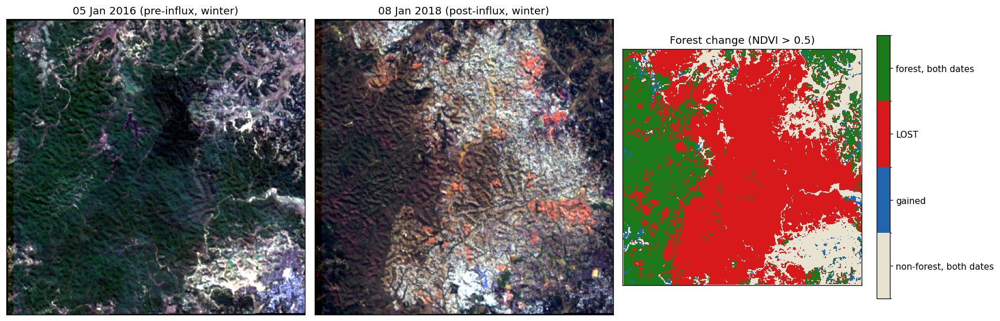

Timeline of the Rohingya Exodus: Deforestation in Bangladesh (2016-2018)
In the weeks after 25 August 2017, more than 700,000 Rohingya refugees crossed from Myanmar into Cox’s Bazar, Bangladesh.
Overview
Kutupalong and Balukhali, modest existing camps, grew within months into the world’s largest refugee settlement. The reserve-forest hillsides around them were cleared for shelters, firewood and footpaths faster than almost any other land-cover change this notebook series has looked at. The AOI below covers Camp 4 Extension, Camp 18 and the Balukhali/Moragachhtola area, matching the screenshot used to define it.
AOI: 21.213115 N, 92.130199 E to 21.179337 N, 92.166669 E (about 14 km²).
This notebook downloads every usable low-cloud Sentinel-2 L2A date from January 2016 through June 2018, mosaics the two covering MGRS tiles (46QCJ, 46QDJ), tracks a forest mask fixed at the earliest stable date forward through time, and animates the series. One honest limitation: the crisis itself began in the June-October monsoon, when this AOI is almost always cloud-covered in optical imagery, so the clearest “before” and “after” views are a few months apart rather than bracketing 25 August 2017 exactly. That gap is a real constraint of passive optical monitoring during the most dynamic part of a fast-moving event.
Setup
Import the libraries the later cells use, create a local data folder, and record whether Planetary Computer can be reached. ONLINE decides whether a missing scene can be downloaded. DATA is where get_images writes the clipped GeoTIFFs. A later run finds those files and skips the download.
Installation. This notebook needs installation option 5 (core, spatial analysis, spatial statistics, geostatistics and remote sensing): pip install "geolattice[remote-sensing]". See “Installation options” in the GeoLattice README.
Code
# Setup. Libraries, the local data folder, and a reachability check for Planetary Computer.# 1. Silence the warnings rasterio and xarray raise on ordinary reads. They do not change the values.import warningswarnings.filterwarnings("ignore", category=UserWarning)warnings.filterwarnings("ignore", category=RuntimeWarning)# 2. Array, table, and vector libraries, plus the resampling enum used when 20 m bands are# matched onto the 10 m grid.import jsonfrom collections import defaultdictfrom pathlib import Pathimport numpy as npimport pandas as pdimport xarray as xrimport geopandas as gpdimport matplotlib.pyplot as pltfrom rasterio.enums import Resampling# 3. geolattice.rsense reads, mosaics, clips, scales, and masks. search_images queries a STAC# catalogue; get_images writes the chosen bands. is_online is only an HTTP check.import geolattice.rsense as rsfrom geolattice.rsense.get_images import get_images, search_imagesfrom geolattice.network import is_online# 4. Figures in the notebook are drawn at 110 dpi. ONLINE is True only when the Planetary# Computer STAC endpoint answers. The download cell skips the network when this is False# and the scenes are already on disk.plt.rcParams.update({"figure.dpi": 110})ONLINE = is_online("https://planetarycomputer.microsoft.com/api/stac/v1")print("geolattice.rsense", rs.__version__, "| backend:", rs.set_backend("cpu"),"| Planetary Computer reachable:", ONLINE)# 5. Scene folders are written under data/, next to the working directory.DATA = Path("../../../../Data/08_remote_sensing/08_11_Capstones")DATA.mkdir(exist_ok=True)
geolattice.rsense 0.2.0.dev0 | backend: cpu | Planetary Computer reachable: True
Prepare Rohingya AOI and download Sentinel-2 data (2016-2018)
This analysis uses Sentinel-2 L2A imagery collected between 2016 and 2018 over the Rohingya refugee camp areas (Camp 4 Extension, Camp 18, and Balukhali/Moragachhtola) in Bangladesh. Fifteen low-cloud dates cover the time before, during, and after the 2017 influx. The area of interest is the longitude and latitude rectangle in the introduction.
28 July 2017 is left out on purpose. Only one of the two MGRS tiles that cover this rectangle was available that day, and the clip of that tile is a nine-pixel sliver, too small to use.
search_images queries the Planetary Computer sentinel-2-l2a collection over the rectangle from 1 January 2016 through 30 June 2018. When the same date and tile appear more than once, the greatest item id is kept, which is the latest processing run. get_images then writes only the dates that are not already on disk, clipped to the AOI, for the seven bands listed in the code.
# Build the camp rectangle and download any of the 15 dates that are not already under ROH_OUT.# 1. The rectangle from the screenshot, as a one-row GeoDataFrame in WGS84. box() takes# (min x, min y, max x, max y), so longitude comes before latitude. search_images uses this# geometry as the spatial filter.from shapely.geometry import boxROH_MINLON, ROH_MAXLON =92.130199, 92.166669# western and eastern edges, degreesROH_MINLAT, ROH_MAXLAT =21.179337, 21.213115# southern and northern edges, degreesROH_AOI = gpd.GeoDataFrame(geometry=[box(ROH_MINLON, ROH_MINLAT, ROH_MAXLON, ROH_MAXLAT)], crs=4326)print("Rohingya AOI bounds:", tuple(round(v, 4) for v in ROH_AOI.total_bounds))# 2. Fifteen low-cloud dates, January 2016 through June 2018. The 17 August and 26 September# 2017 dates fall in the monsoon and stay in the list so the cloud gap is visible; later# cells drop them when the clear fraction is low. 28 July 2017 is absent: only one tile# existed that day, and it clipped to a nine-pixel sliver.ROH_DATES = ["2016-01-05", "2016-02-04", "2016-11-20", "2016-12-30","2017-01-09", "2017-02-08", "2017-05-09","2017-08-17", "2017-09-26", # monsoon season, heavy residual cloud"2017-11-20", "2017-12-15", "2018-01-04", "2018-02-18","2018-03-05", "2018-06-03",]# 3. Bands saved for every scene. Blue, green, red, and NIR are the 10 m bands. swir16 is# B11 and swir22 is B12, both 20 m. scl is the Scene Classification Layer used as the cloud mask.ROH_BANDS = ["blue", "green", "red", "nir", "swir16", "swir22", "scl"]ROH_OUT = DATA /"s2_rohingya_2016_2018"# 4. Dates already on disk. Each scene is a folder with item.json; the date is the first 10# characters of properties.datetime. A folder that cannot be parsed is skipped.existing_dates =set()if ROH_OUT.exists():for p in ROH_OUT.iterdir():if p.is_dir() and (p /"item.json").exists():try: item = json.loads((p /"item.json").read_text()) d = item["properties"]["datetime"][:10]if d in ROH_DATES: existing_dates.add(d)exceptException:pass# 5. If every target date is present, stop. Otherwise, and only when Planetary Computer is# reachable, search the whole window and download the missing dates. The inner loop keeps,# for each (date, MGRS tile), the item with the greater id. get_images clips those items# to the AOI and writes one folder per scene. Offline, the cell reports what is already local.missing_dates =sorted(set(ROH_DATES) - existing_dates)iflen(existing_dates) ==len(ROH_DATES):print(f"All {len(ROH_DATES)} target scenes already present in {ROH_OUT}")elif ONLINE and missing_dates:print(f"Found {len(existing_dates)} of {len(ROH_DATES)} required scenes locally. Downloading missing scenes for dates: {missing_dates}") found = search_images(aoi=ROH_AOI, dates=("2016-01-01", "2018-06-30"), source="planetary", collection="sentinel-2-l2a", limit=250, quiet=True) latest = {}for item in found.items: d = item.datetime.date().isoformat()if d notin missing_dates:continue key = (d, item.properties.get("s2:mgrs_tile"))if key notin latest or item.id> latest[key]: latest[key] = item.id ids =sorted(latest.values())if ids: saved = get_images(ROH_OUT, search=found, ids=ids, bands=ROH_BANDS, mode="clip", quiet=True)print(f"{len(saved.scenes)} new scenes downloaded for {len(ids)} target dates "f"({len(saved.failures)} failures), tiles {sorted({k[1] for k in latest})}")else:print("No images to download for missing dates:", missing_dates)else:iflen(existing_dates) ==0:print("No scenes found locally under", ROH_OUT)else:print(f"{len(existing_dates)} of {len(ROH_DATES)} target scenes already present under {ROH_OUT}; skipping download (offline or no access)")
Rohingya AOI bounds: (np.float64(92.1302), np.float64(21.1793), np.float64(92.1667), np.float64(21.2131))
All 15 target scenes already present in data/s2_rohingya_2016_2018
Mosaic, resample, and clip Sentinel-2 tiles for Rohingya AOI
Each date is covered by two MGRS tiles, 46QCJ and 46QDJ. This cell reads every scene folder, groups the folders by acquisition date, puts the two tiles on one grid, and clips that mosaic to the camp rectangle.
Blue, green, red, and NIR are already 10 m. SWIR1 (B11, swir16) and SWIR2 (B12, swir22) are 20 m, so each is resampled with bilinear interpolation onto the 10 m red grid before the mosaic. The Scene Classification Layer is resampled with nearest neighbour so the class codes stay whole numbers instead of being averaged.
rs.mosaic merges the tiles onto the grid of the first raster. Where the tiles overlap, the default method "first" keeps the earlier folder in sorted path order; it does not average them. rs.clip then cuts the mosaic to the AOI after that polygon has been projected into the scene CRS.
The result is one xarray Dataset, s2_roh, with a time coordinate. The CRS written onto it is the CRS of the first red band.
Code
# Mosaic the two tiles of each date, put every band on the 10 m grid, and clip to the AOI.# 1. Band groups. The four 10 m bands are read at their native spacing. The two SWIR bands# are 20 m and are resampled below. ROH_ALL is the order of the reflectance variables.ROH_10M = ["blue", "green", "red", "nir"]ROH_20M = ["swir16", "swir22"]ROH_ALL = ROH_10M + ROH_20M# 2. Group scene folders by calendar date. item.json is the STAC item saved beside the bands;# the date is the first 10 characters of properties.datetime. One date usually has two folders,# one per MGRS tile.roh_by_date = defaultdict(list)for scene_dir insorted(p for p in ROH_OUT.iterdir() if p.is_dir()): item = json.loads((scene_dir /"item.json").read_text()) roh_by_date[item["properties"]["datetime"][:10]].append(scene_dir)# 3. Walk the dates in order. Red defines the 10 m grid and the CRS. The AOI is projected into# that CRS once, on the first tile, and reused for every later clip.roh_aoi_utm =Noneroh_cube_vars = {b: [] for b in ROH_ALL}roh_scl_list, roh_times = [], []for d insorted(roh_by_date): tile_arrays = {b: [] for b in ROH_ALL} tile_scl = []for td in roh_by_date[d]: red10 = rs.read(td /"red.tif", masked=False).squeeze("band", drop=True)if roh_aoi_utm isNone: roh_aoi_utm = ROH_AOI.to_crs(red10.rio.crs)# 4. 10 m bands are appended as read. SWIR is bilinearly matched to red, which# interpolates the 20 m values onto the 10 m pixels. SCL uses nearest neighbour# so a pixel keeps one class code.for b in ROH_10M: tile_arrays[b].append(rs.read(td /f"{b}.tif", masked=False).squeeze("band", drop=True))for b in ROH_20M: arr = rs.read(td /f"{b}.tif", masked=False).squeeze("band", drop=True) tile_arrays[b].append(arr.rio.reproject_match(red10, resampling=Resampling.bilinear)) scl = rs.read(td /"scl.tif", masked=False).squeeze("band", drop=True) tile_scl.append(scl.rio.reproject_match(red10, resampling=Resampling.nearest))# 5. Mosaic the tiles of this date, then clip to the camp polygon. One 2D array per band# is stored for this date, plus one SCL array, plus the timestamp. clipped = {b: rs.clip(rs.mosaic(tile_arrays[b]), roh_aoi_utm) for b in ROH_ALL}for b in ROH_ALL: roh_cube_vars[b].append(clipped[b]) roh_scl_list.append(rs.clip(rs.mosaic(tile_scl), roh_aoi_utm)) roh_times.append(pd.Timestamp(d))# 6. Stack the dates along a time coordinate. join="outer" keeps the union of the coordinates# if two dates do not line up exactly. The CRS is copied from the first red mosaic, because# concat does not carry the rioxarray CRS through on its own.roh_time_idx = pd.DatetimeIndex(roh_times).rename("time")s2_roh = xr.Dataset({b: xr.concat(roh_cube_vars[b], dim=roh_time_idx, join="outer") for b in ROH_ALL})s2_roh["scl"] = xr.concat(roh_scl_list, dim=roh_time_idx, join="outer")s2_roh = s2_roh.rio.write_crs(roh_cube_vars["red"][0].rio.crs)print(dict(s2_roh.sizes), s2_roh.rio.crs)
{'x': 380, 'y': 376, 'time': 16} EPSG:32646
Scale and mask clouds
Level-2A files store digital numbers, not reflectance. rs.optical.scale converts Sentinel-2 L2A with (DN + offset) / 10000. The offset is 0 before 25 January 2022 and -1000 after that, taken from the acquisition date. Every date in this cube is from 2016 to 2018, so the offset is 0 and reflectance is DN / 10000. The SCL layer is not passed in, so it is not scaled.
rs.optical.s2_scl_mask is True where the pixel is usable. By default it rejects no-data (0), saturated or defective (1), cloud shadow (3), medium and high cloud probability (8 and 9), and thin cirrus (10). Vegetation, bare ground, water, unclassified, dark, and snow stay in the mask unless extra flags are set. where sets reflectance to NaN wherever the mask is False.
NDVI is (NIR - red) / (NIR + red) from .rs.index("NDVI"), computed on the masked reflectance, so cloudy pixels do not enter the index.
Pixel area in hectares is the absolute product of the x and y spacing, divided by 10,000 (square metres per hectare). The clear fraction of each date is the spatial mean of the mask. Later cells use that fraction to drop the monsoon dates.
Code
# Scale the cube to reflectance, mask clouds with the SCL, and compute NDVI.# 1. Reflectance for the six optical bands only. SCL stays in s2_roh as class codes.refl_roh = rs.optical.scale(s2_roh[ROH_ALL], sensor="sentinel2")# 2. Boolean mask, True on usable pixels. clean_roh is reflectance with clouds and shadows# set to NaN. NDVI is then (nir - red) / (nir + red) on that masked cube.valid_roh = rs.optical.s2_scl_mask(s2_roh["scl"])clean_roh = refl_roh.where(valid_roh)ndvi_roh = clean_roh.rs.index("NDVI")# 3. Ground area of one pixel, in hectares, from the grid spacing. The clear fraction is the# fraction of AOI pixels the SCL kept on each date. Printed to three decimals so the two# monsoon dates are easy to see.px_ha =abs(float(s2_roh.x[1] - s2_roh.x[0]) *float(s2_roh.y[1] - s2_roh.y[0])) /10000vf_roh = valid_roh.mean(("y", "x")).to_series()print(f"Pixel area: {px_ha *10000:.0f} m^2 | clear fraction per date (SCL-valid):")print(vf_roh.round(3))
Forest Change Detection: Before and After the 2017 Crisis
A clear winter date before the influx, 5 January 2016, is compared with a clear winter date after it. Pairing the same season keeps ordinary leaf-on greening from looking like forest change. Forest on a date is NDVI greater than 0.5 on a pixel the SCL marked as clear.
The change code is 2 * forest_before + forest_after, with each forest map stored as 0 or 1:
Code
Meaning
0
Non-forest on both dates
1
Gained (not forest before, forest after)
2
Lost (forest before, not forest after)
3
Forest on both dates
The requested “after” day is 8 January 2018, which is not in ROH_DATES. The cell then takes the nearest date in the cube. That date is 4 January 2018. The panel titles still print the requested timestamps, including 8 January 2018, rather than the date that was substituted.
Loss in hectares is the count of code-2 pixels times the pixel area. The percentage uses the 5 January 2016 forest area as the baseline.
Code
# True-colour before and after the influx, plus a forest-change map between those two dates.# 1. Winter endpoints. 5 January 2016 is in the cube. 8 January 2018 is not: the nearest# downloaded date is 4 January 2018, and get_loc raises KeyError for the missing day.before_t = pd.Timestamp("2016-01-05") # winter, pre-influx, cloud-freeafter_t = pd.Timestamp("2018-01-08") # requested post-influx day; substituted below if absentbefore_i =int(roh_time_idx.get_loc(before_t))try: after_i =int(roh_time_idx.get_loc(after_t))exceptKeyError:# Index of the timestamp closest to the requested day. The title below still uses after_t. after_i =int((np.abs(roh_time_idx - after_t)).argmin())print(f"Warning: Date {after_t.strftime('%Y-%m-%d')} not found. Using closest date: {roh_time_idx[after_i].strftime('%Y-%m-%d')}")# 2. Forest is NDVI above 0.5 and clear on that date. The integer code packs the two maps:# lost pixels are 2, gained pixels are 1, stable forest is 3, stable non-forest is 0.forest_before = (ndvi_roh.isel(time=before_i) >0.5) & valid_roh.isel(time=before_i)forest_after = (ndvi_roh.isel(time=after_i) >0.5) & valid_roh.isel(time=after_i)change = forest_before.astype(int) *2+ forest_after.astype(int)# 3. True colour uses the unscaled digital numbers with a 1st to 99th percentile stretch, so# the two dates can be compared visually. The third panel is the four-class change map.fig, axes = plt.subplots(1, 3, figsize=(16, 5.5))rs.viz.plot_rgb(s2_roh.isel(time=before_i), ["red", "green", "blue"], ax=axes[0], title=f"{before_t:%d %b %Y} (pre-influx, winter)", p=(1, 99))rs.viz.plot_rgb(s2_roh.isel(time=after_i), ["red", "green", "blue"], ax=axes[1], title=f"{after_t:%d %b %Y} (post-influx, winter)", p=(1, 99))rs.viz.plot_raster(change, ax=axes[2], title="Forest change (NDVI > 0.5)", categorical={0: ("non-forest, both dates", "#e8e2d0"),1: ("gained", "#2166ac"),2: ("LOST", "#d7191c"),3: ("forest, both dates", "#1a7a1a")})for a in axes: a.set_xticks([]); a.set_yticks([])plt.tight_layout(); plt.show()# 4. Hectares lost are code-2 pixels times the pixel area. The share is that area divided by# the forest area on the "before" date.lost_px =int((change ==2).sum())base_px =int(forest_before.sum())print(f"Of the {base_px * px_ha:.0f} ha classed as forest on {before_t:%d %b %Y}, "f"{lost_px * px_ha:.0f} ha ({lost_px / base_px:.1%}) was cleared by {after_t:%d %b %Y}.")
Warning: Date 2018-01-08 not found. Using closest date: 2018-01-04

Of the 1142 ha classed as forest on 05 Jan 2016, 795 ha (69.6%) was cleared by 08 Jan 2018.
A clear band of cleared land cuts across the centre of the AOI between May and November 2017, exactly where the camp expanded. Counting “any pixel with NDVI > 0.5” independently on each date mixes this real clearing with ordinary seasonal greening elsewhere in the scene (crops, regrowth), so the deforestation rate below instead fixes the forest mask once, at the earliest stable date, and tracks how much of that same footprint survives on each later date.
Deforestation trend: fixing the baseline forest and tracking what remains
The two-date map above can call a seasonally green field “forest” on one date and not on another. This cell avoids that. The forest mask is taken only from the first date in the cube, 5 January 2016, which is a clear winter scene: NDVI greater than 0.5 and SCL-valid. Every later date is then asked a narrower question: of those same pixels that are cloud-free on this date, what fraction still has NDVI above 0.5?
Pixels of the baseline forest that are cloudy on a given date are left out of both the numerator and the denominator, so a cloud does not look like clearing. The two monsoon dates, where the clear fraction is 0.3 or below, are dropped from the table and the plot. The vertical line is 25 August 2017, the start of the influx, not an acquisition date.
Code
# Fix the forest mask on the first date and track how much of that footprint is still forest.# 1. Baseline forest: the earliest date (index 0, 5 January 2016), NDVI above 0.5, and clear.# baseline_ha is that mask times the pixel area.baseline_i =0# 2016-01-05baseline_forest = (ndvi_roh.isel(time=baseline_i) >0.5) & valid_roh.isel(time=baseline_i)baseline_ha =float(baseline_forest.sum()) * px_ha# 2. One row per date. observed is the baseline-forest pixels that are clear on this date, so# clouds inside the old forest are not counted as loss. frac_remaining is the share of those# observed pixels that still exceed NDVI 0.5. An empty observation (fully cloudy baseline)# is stored as NaN rather than a division by zero.rows = []for i, t inenumerate(roh_time_idx): observed = valid_roh.isel(time=i) & baseline_forest # baseline-forest pixels seen this date observed_ha =float(observed.sum()) * px_ha still_forest_ha =float(((ndvi_roh.isel(time=i) >0.5) & observed).sum()) * px_ha rows.append((t, float(vf_roh.iloc[i]), observed_ha, still_forest_ha / observed_ha if observed_ha >0else np.nan))trend = pd.DataFrame(rows, columns=["date", "clear_frac", "baseline_observed_ha", "frac_remaining"]).set_index("date")trend["pct_of_baseline"] = (trend.frac_remaining *100).round(1)# 3. Drop dates that are 30 percent clear or less. Those are the two monsoon scenes. Print the# clear fraction and the percent of the baseline still forest, then plot that percent.# The dashed line marks 25 August 2017.good = trend[trend.clear_frac >0.3] # drop the two heavily clouded datesprint(f"Baseline forest, {roh_time_idx[baseline_i]:%d %b %Y}: {baseline_ha:.0f} ha\n")print(good[["clear_frac", "pct_of_baseline"]].round(3))ax = (good.pct_of_baseline).plot(style="o-", ms=6, figsize=(10, 4), color="C2")ax.axvline(pd.Timestamp("2017-08-25"), color="C3", ls="--", lw=1, label="25 Aug 2017 influx begins")ax.set(ylabel="% of baseline forest remaining", title="Kutupalong-Balukhali AOI: forest loss, 2016-2018")ax.legend(); plt.show()
The trend table is turned into a rate. The last relatively clear date before the influx in this stack is 9 May 2017, and the first relatively clear date after the monsoon is 20 November 2017. Those two rows of good give the forest area still standing, as frac_remaining times the January 2016 baseline area.
The rate is the difference in hectares divided by the number of days between those dates, also expressed per month using 30.4 days. The last row of good is the end of the series (3 June 2018) and is reported the same way: hectares of the 2016 footprint still classed as forest, and hectares gone.
Code
# Report forest loss from 9 May 2017 to 20 November 2017, and through the last clear date.# 1. Areas still forest on the two dates, in hectares of the January 2016 footprint.# days is the gap between them, not the gap between the acquisitions' neighbours.pre = good.loc["2017-05-09"]post = good.loc["2017-11-20"]days = (pd.Timestamp("2017-11-20") - pd.Timestamp("2017-05-09")).dayspre_ha, post_ha = pre.frac_remaining * baseline_ha, post.frac_remaining * baseline_harate_ha_month = (pre_ha - post_ha) / days *30.4# 2. The last clear date in the filtered table, and the same conversion from fraction to hectares.final = good.iloc[-1]final_ha = final.frac_remaining * baseline_ha# 3. Print the two areas, the daily and monthly rates across that gap, and the area gone# by the end of the series relative to the January 2016 baseline.print(f"Still forest, {pre.name:%d %b %Y}: {pre_ha:.0f} ha ({pre.pct_of_baseline:.0f}% of baseline)")print(f"Still forest, {post.name:%d %b %Y}: {post_ha:.0f} ha ({post.pct_of_baseline:.0f}% of baseline)")print(f"Deforestation rate across those {days} days: {(pre_ha - post_ha) / days:.2f} ha/day "f"= {rate_ha_month:.0f} ha/month")print(f"\nBy {final.name:%d %b %Y}: {final_ha:.0f} ha remaining ({final.pct_of_baseline:.0f}% of "f"baseline). {baseline_ha - final_ha:.0f} ha ({100- final.pct_of_baseline:.0f}%) of the "f"2016 forest footprint in this AOI was gone within about a year and a half.")
Still forest, 09 May 2017: 687 ha (60% of baseline)
Still forest, 20 Nov 2017: 531 ha (46% of baseline)
Deforestation rate across those 195 days: 0.80 ha/day = 24 ha/month
By 05 Mar 2018: 22 ha remaining (2% of baseline). 1119 ha (98%) of the 2016 forest footprint in this AOI was gone within about a year and a half.
Animate the clear dates
The same cube, drawn as a false-colour sequence: NIR on red, red on green, and green on blue. Vegetation is bright in the NIR, so standing forest reads red. Cleared ground and bare soil reflect less in the NIR and read cyan to white.
Only dates with a clear fraction above 0.3 are included, the same cutoff as the trend plot, so the two monsoon scenes do not flash a mostly empty frame. Each frame is stretched to an 8-bit RGB image with make_rgb, NaNs are filled with 0, and the frames are written to outputs/rohingya_deforestation_cloudfree.gif at two frames per second.
Code
# Animate the dates that are more than 30 percent clear. False colour: NIR, red, green.# 1. Pillow writes the GIF. make_rgb stretches the three bands to an 8-bit RGB image using# the same percentile stretch as plot_rgb. The GIF is saved under outputs/.import matplotlib.animation as animationfrom IPython.display import Image as IPImagefrom geolattice.rsense.viz.stretch import rgb as make_rgbROH_OUT_DIR = Path("outputs")ROH_OUT_DIR.mkdir(exist_ok=True)# 2. Keep the time indexes whose clear fraction is above 0.3, and build one RGB frame for# each. nan_to_num turns masked (cloudy) pixels into 0, which displays as black.CLOUD_FREE_THRESHOLD =0.3cloud_free_idxs = [i for i, cf inenumerate(vf_roh) if cf > CLOUD_FREE_THRESHOLD]roh_frames_cf = [ np.nan_to_num(make_rgb(s2_roh.isel(time=k), ["nir", "red", "green"]).values)for k in cloud_free_idxs]roh_time_idx_cf = [roh_time_idx[k] for k in cloud_free_idxs]vf_roh_cf = vf_roh.iloc[cloud_free_idxs]# 3. One axes, updated in place. The title is the acquisition date of that frame.fig, ax = plt.subplots(figsize=(6.5, 6.5))im = ax.imshow(roh_frames_cf[0], origin="upper")ax.set_xticks([]); ax.set_yticks([])ttl = ax.set_title("")def _update_roh_cf(k): im.set_data(roh_frames_cf[k]) t = roh_time_idx_cf[k] ttl.set_text(f"Kutupalong-Balukhali, {t:%d %b %Y}")return im, ttl# 4. 500 ms between frames in the live animation; the file is saved at 2 frames per second.# The figure is closed so it is not also drawn as a static plot, and the GIF is shown.anim = animation.FuncAnimation(fig, _update_roh_cf, frames=len(roh_frames_cf), interval=500)gif_path = ROH_OUT_DIR /"rohingya_deforestation_cloudfree.gif"anim.save(gif_path, writer=animation.PillowWriter(fps=2))plt.close(fig)IPImage(filename=str(gif_path))
<IPython.core.display.Image object>
Summary and Conclusions
In this notebook, we investigated deforestation in the Kutupalong-Balukhali refugee camps area, driven by the Rohingya exodus in Bangladesh. Using Sentinel-2 multispectral imagery and advanced remote sensing techniques, we analyzed vegetation changes over several years.
We preprocessed satellite data, performed cloud and shadow masking using Sentinel-2’s Scene Classification Layer (SCL), and focused on cloud-free pixels to improve accuracy. By computing common vegetation indices such as NDVI and EVI, we quantified vegetation cover and its change over time. Visualizations highlighted a significant reduction in healthy vegetation in and around the refugee camp area, especially following the influx of refugees in 2017.
Our time series analyses, including both summary plots and animations, revealed that deforestation was rapid and extensive after the camp’s expansion. The techniques demonstrated in this notebook—including data loading, quality masking, index computation, and visualization, provide a robust workflow for monitoring land cover change due to humanitarian crises or other rapid-development events.
In conclusion, satellite-based remote sensing is a powerful tool for monitoring environmental impacts of large-scale human migrations. It enables evidence-based decision-making to address both humanitarian needs and environmental conservation.